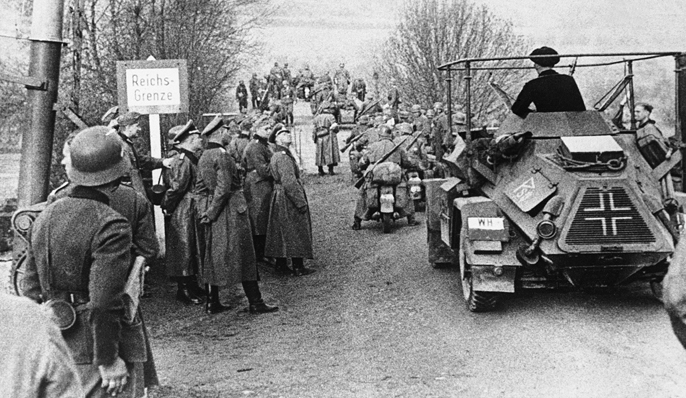
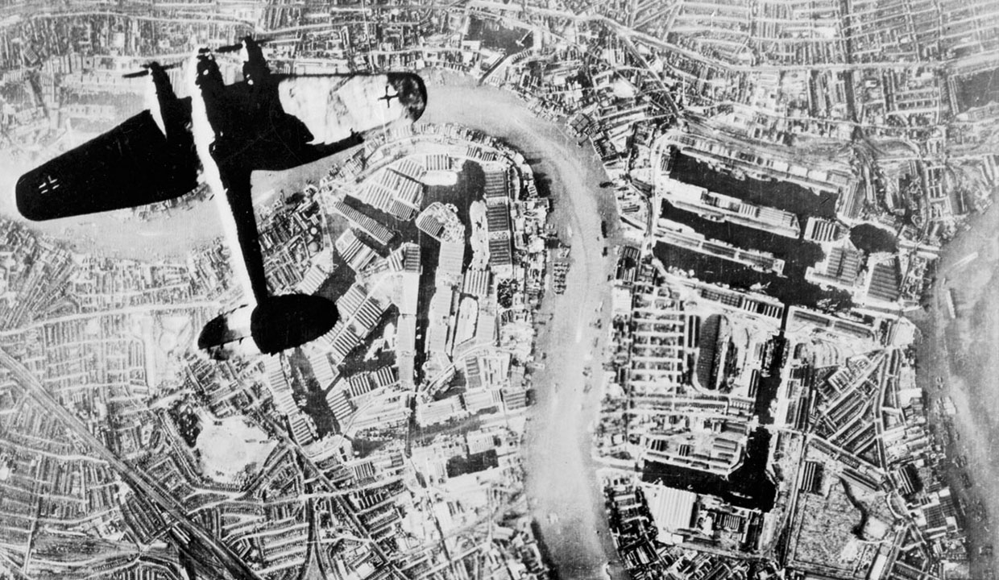
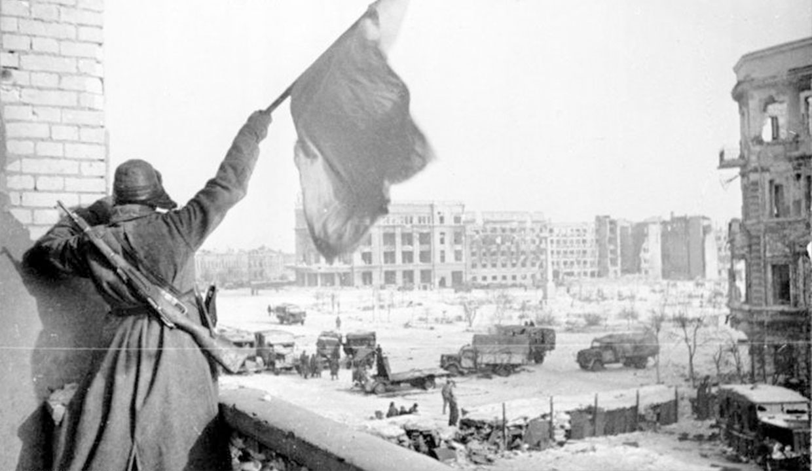
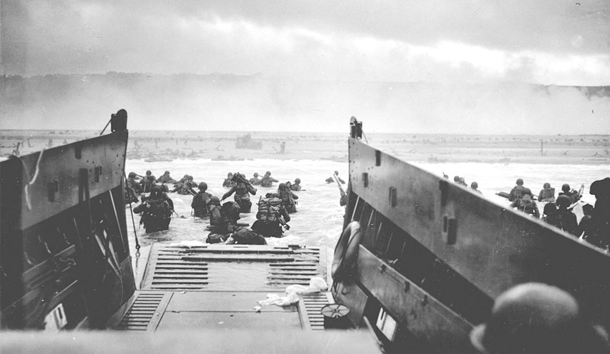
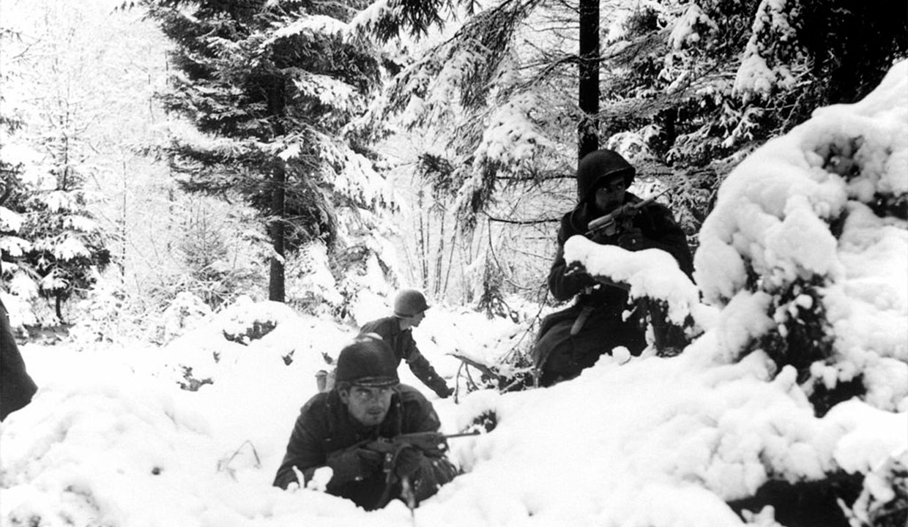

Invasie Polen

De Poolse veldtocht was de invasie van Polen door nazi-Duitsland. De inval wordt gezien als het begin van de Tweede Wereldoorlog. De invasie begon op 1 september 1939 met de Slag om Westerplatte. De Duitsers veroverden binnen vier weken het westelijk deel van Polen met een nieuwe tactiek, de Blitzkrieg oftewel "bliksemoorlog".
Op 17 september 1939 viel de Sovjet-Unie Oost-Polen binnen, als onderdeel van het Molotov-Ribbentroppact. Het land werd daarop verdeeld tussen de twee overwinnaars.
De Blitzkrieg
Men wist dat de geallieerden hun hoofdweerstandslijn tussen Antwerpen en Namen wilden vormen. Door snel op te rukken hoopte men de vijand te overvallen nog voordat hij zich daar had kunnen ingraven. De ongeëvenaarde stootkracht van de Duitse infanterie zou hem dan terugwerpen op de Somme. Dit plan voorzag dus in een frontale aanval zonder omvatting en Kesselschlacht, recht tegen de vijandelijke hoofdmassa in. Het was derhalve in strijd met de doctrine.
De Blitz
The Blitz (shortened from German 'Blitzkrieg', "lightning war") was the period of sustained strategic bombing of the United Kingdom by Nazi Germany during the Second World War.
Over a period of 267 days (almost 37 weeks), London was attacked 71 times, Birmingham, Liverpool and Plymouth eight times, Bristol six, Glasgow five, Southampton four, Portsmouth and Hull three, and there was also at least one large raid on another eight cities. This was a result of a rapid escalation starting on 24 August 1940, when night bombers aiming for RAF airfields drifted off course and accidentally destroyed several London homes, killing civilians, combined with the UK Prime Minister Winston Churchill's immediate response of bombing Berlin on the following night.
Stalingrad
De Slag om Stalingrad (23 augustus 1942 - 2 februari 1943), geldt als keerpunt van de Tweede Wereldoorlog. De stad was genoemd naar Jozef Stalin. Via Richard Sorge wist Stalin dat Japan de Sovjetunie zou aanvallen nadat Duitsland een willekeurige stad aan de Wolga had veroverd.
Het Duitse 6e leger werd volledig vernietigd door het Rode Leger, dat nog maar enkele maanden eerder nagenoeg overwonnen leek. Stalingrad (het huidige Wolgograd) werd het symbool voor de wederopstanding van het Rode Leger en gaf het Duitse moreel een zware klap; in brede lagen van de bevolking drong door dat de oorlog wel eens slecht zou kunnen aflopen voor Duitsland; het naziregime zag voortaan af van 'kanonnen én boter'-propaganda en riep na afloop van de slag het volk op tot een totale oorlog.
Operatie Overlord
Operatie Overlord was tijdens de Tweede Wereldoorlog de codenaam voor de invasie door de westerse geallieerden in het door Duitsland bezette West-Europa. Operatie Overlord begon op 6 juni 1944 en eindigde op 25 augustus 1944, toen Parijs werd bevrijd.
De operatie startte met luchtlandingen en een massale amfibische aanval in de vroege morgen van 6 juni. Na de landing werd allereerst gepoogd het Normandische bruggenhoofd te behouden en uit te breiden. Diverse operaties werden hiervoor ondernomen en tijdens Operatie Cobra braken de geallieerden definitief door de Duitse linies. Toen de Duitsers in de val kwamen bij Falaise, was de strijd in geallieerd voordeel beslist. De weg naar Parijs lag open en de Franse hoofdstad aan de Seine werd ingenomen. Men beschouwt de bevrijding van Parijs over het algemeen als het einde van Operatie Overlord. De eerste dag van Overlord werd aangeduid met 'D-Day', een term die vaak wordt geassocieerd met de hele operatie.
ArdennenOffensief
De Slag om de Ardennen (of het Ardennenoffensief) was het laatste grote offensief van de Duitse Wehrmacht aan het westfront in de Tweede Wereldoorlog. De slag vond plaats van 16 december 1944 tot 25 januari 1945 en werd gewonnen door de geallieerden.
In de Engelstalige wereld staat deze strijd bekend onder de naam Battle of the Bulge, zo genoemd vanwege de vorm van de frontlijn (een uitstulping of zak).